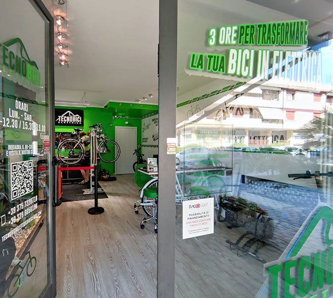

La bici che ami, trasformata da persone che puoi incontrare.
Siamo Michele e Carlo. Nel nostro negozio-officina di Este trasformiamo biciclette tradizionali in e-bike, aiutandoti a scegliere la configurazione più adatta ai tuoi percorsi e offrendoti assistenza anche dopo il montaggio.
Prova in sede · Agevolazioni Legge 104 · Assistenza post-vendita

Tutto è iniziato con un brindisi.
Tecnobicielettrica nasce dall’incontro tra Michele e Carlo a un evento delle loro figlie. Non conoscendosi, uno dei due rompe il ghiaccio con una bottiglia di Millesimato 33 dell’azienda agricola “Le Corti”. Dai racconti e dalle esperienze condivise nasce l’idea di portare a Este un’officina dedicata alla pedalata assistita.
Da quell’incontro è nata un’idea che oggi è diventata il nostro lavoro quotidiano: dare nuova vita alle biciclette e aiutare più persone a pedalare con piacere, continuando a usare la bici che amano.
La tua bici, trasformata insieme a te.
Raccontaci come pedali
Porta la bici in negozio oppure mandaci una foto su WhatsApp e descrivici i tuoi percorsi.
Scegliamo il kit
Valutiamo insieme motore, batteria e accessori, senza proporti nulla di cui non hai bisogno.
Montaggio e assistenza
Montiamo e collaudiamo la bici in officina, e restiamo al tuo fianco anche dopo la consegna.
Ti seguiamo prima, durante e dopo l’acquisto.
Trasformazione della tua bici
Rendiamo elettrica la bicicletta che hai già, con il kit più adatto a lei e ai tuoi percorsi.
Prova della bicicletta in sede
Prima di scegliere, puoi provare la bici al nostro punto vendita per capire comodità e adattabilità al tuo utilizzo.
Acquisto con agevolazione Legge 104
Per chi ne ha diritto, è possibile acquistare con le agevolazioni fiscali previste dalla Legge 104. Contattaci per verificare insieme requisiti, documentazione e applicabilità al prodotto scelto.
Contattaci →Kit, batterie e ricambi
Kit Tongsheng e Bafang, batterie e ricambi per la tua e-bike.
Montaggio, collaudo e assistenza
Montiamo e collaudiamo in officina, e restiamo a disposizione per controlli e interventi.
Vendita e assistenza bici elettriche
Ti aiutiamo a scegliere la bici elettrica giusta e la seguiamo nel tempo.
Le persone dietro Tecnobicielettrica.
Ogni bici passa da mani competenti, dal primo consiglio all’assistenza.
Michele e Carlo
Michele e Carlo
Ti accolgono in negozio e ti seguono nella scelta della soluzione giusta.
Meccanico
[Nome da inserire]
Montaggio dei kit, collaudo e interventi di assistenza.
Amministrazione
[Nome da inserire]
Ordini, preventivi, fatture e pratiche.
Marketing
[Nome da inserire]
Sito, social e racconto dei nostri lavori.
Trasformazioni reali.
Trasformazione reale n. 1
[Tipo di bici – da inserire]
- Esigenza
- [Da compilare con il caso reale]
- Soluzione
- [Kit montato – da compilare]
- Risultato
- [Da compilare]
Trasformazione reale n. 2
[Tipo di bici – da inserire]
- Esigenza
- [Da compilare con il caso reale]
- Soluzione
- [Kit montato – da compilare]
- Risultato
- [Da compilare]
Vicini a te, prima e dopo l’acquisto.
Consulenza sulla tua bici
Partiamo dalla bici che hai e da come la usi, non soltanto dal catalogo.
Officina fisica a Este
Un negozio vero, con persone da incontrare in Via Tito Livio 36.
Assistenza diretta
Per domande, controlli e interventi parli con noi, senza servizi clienti anonimi.
Parliamo della tua bici.
Vuoi sapere se possiamo trasformare la tua bici? Mandaci una sua foto su WhatsApp e raccontaci quali percorsi fai: ti aiutiamo a capire da dove partire.